免疫学 (Immunology)
20 templates available

一次二次免疫応答
一次・二次免疫応答テンプレート。抗体価の時間経過と一次/二次の差をプロット。

ELISA検量線
ELISA検量線テンプレート。抗原濃度と吸光度の関係をプロット。定量に使用。

CH50補体活性
CH50補体活性テンプレート。血清希釈と溶血率の関係から補体価を決定。

フローサイトメトリー散布図
フローサイトメトリー散布図テンプレート。CD4/CD8等の二重染色解析に使用。

フローサイトメトリーヒストグラム
フローサイトメトリーヒストグラムテンプレート。蛍光強度の分布をプロット。

抗体価曲線
ワクチン接種後の抗体価経時変化テンプレート。IgM・IgG等の推移をプロット。

細胞増殖アッセイ
リンパ球増殖アッセイテンプレート。刺激濃度と増殖指数の関係をプロット。

細胞傷害アッセイ
細胞傷害性アッセイテンプレート。E:T比と特異的溶解率の関係をプロット。
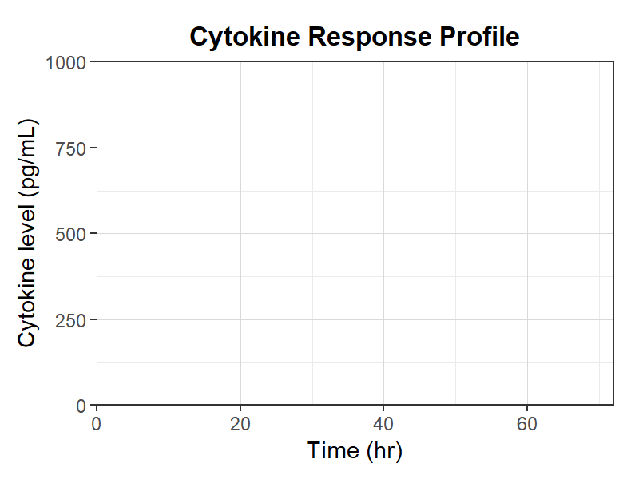
サイトカインプロファイル
サイトカイン応答プロファイルテンプレート。IL-1/TNF/IL-6等の時間経過をプロット。
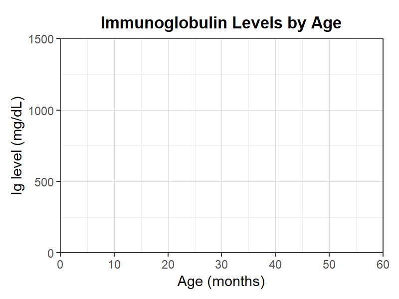
年齢別免疫グロブリン値
年齢別免疫グロブリン値テンプレート。IgG/IgM/IgAの発達変化をプロット。
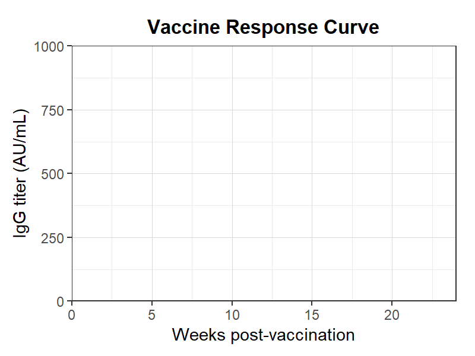
ワクチン応答曲線
ワクチン接種後の免疫応答曲線テンプレート。抗体価の上昇と維持をプロット。
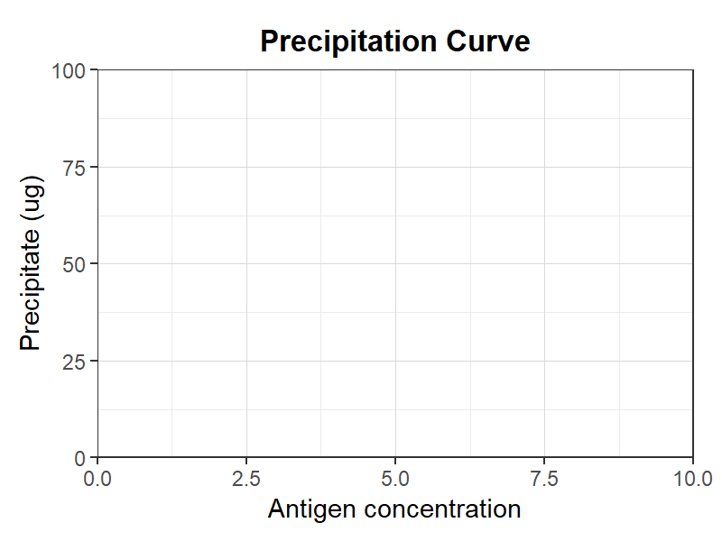
沈降反応曲線
沈降反応曲線（Heidelberger-Kendall曲線）テンプレート。至適比をプロット。
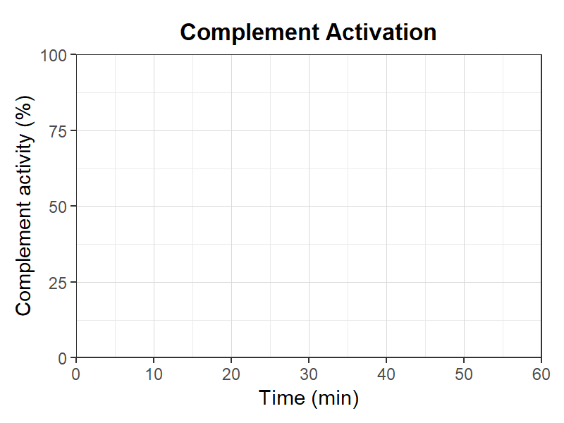
補体活性化タイムライン
補体活性化の時間経過テンプレート。古典経路・副経路の活性化をプロット。
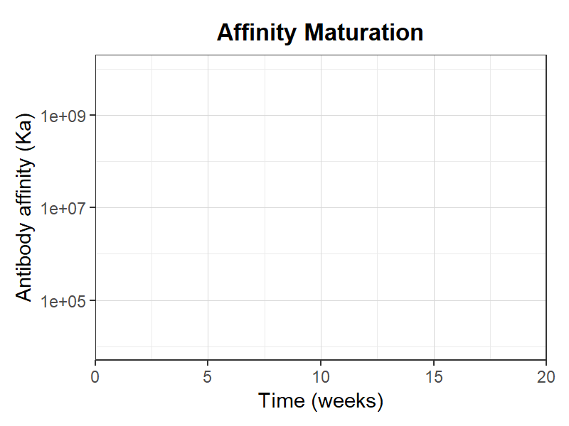
親和性成熟
親和性成熟テンプレート。二次応答での抗体親和性上昇をプロット。
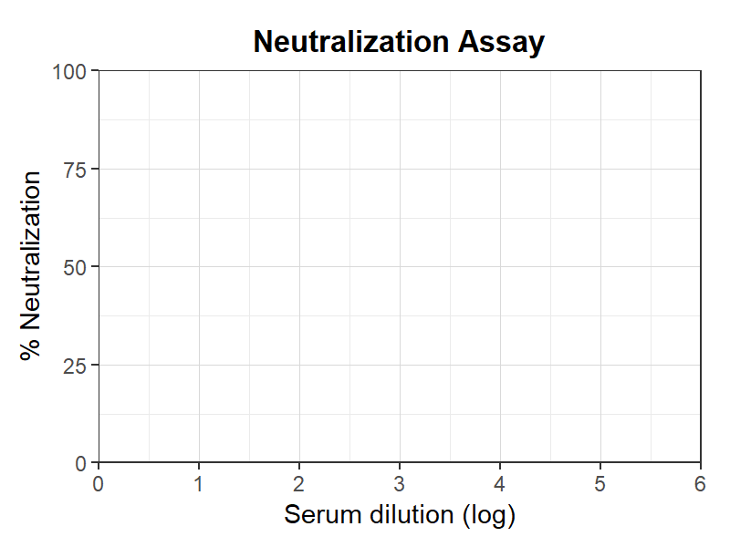
中和試験
中和試験テンプレート。血清希釈と中和率の関係をプロット。
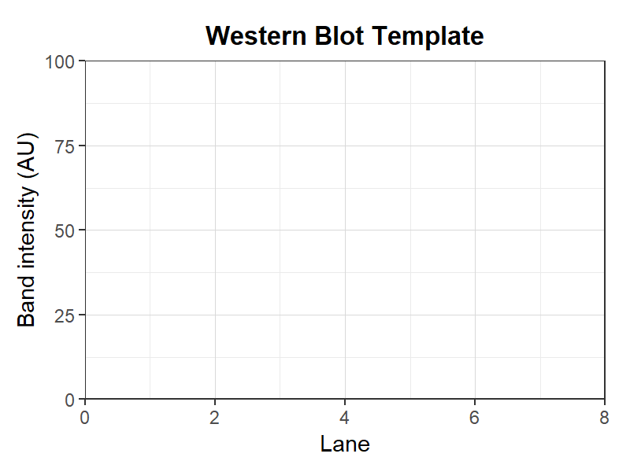
ウエスタンブロットテンプレート
ウエスタンブロットのバンド強度定量テンプレート。
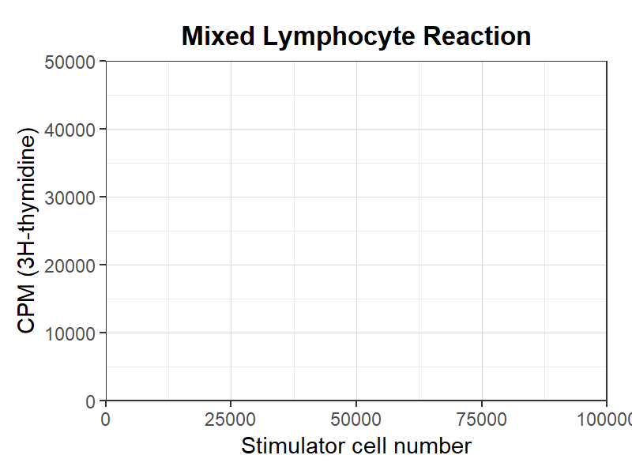
混合リンパ球反応
混合リンパ球反応テンプレート。刺激細胞数と増殖応答の関係をプロット。
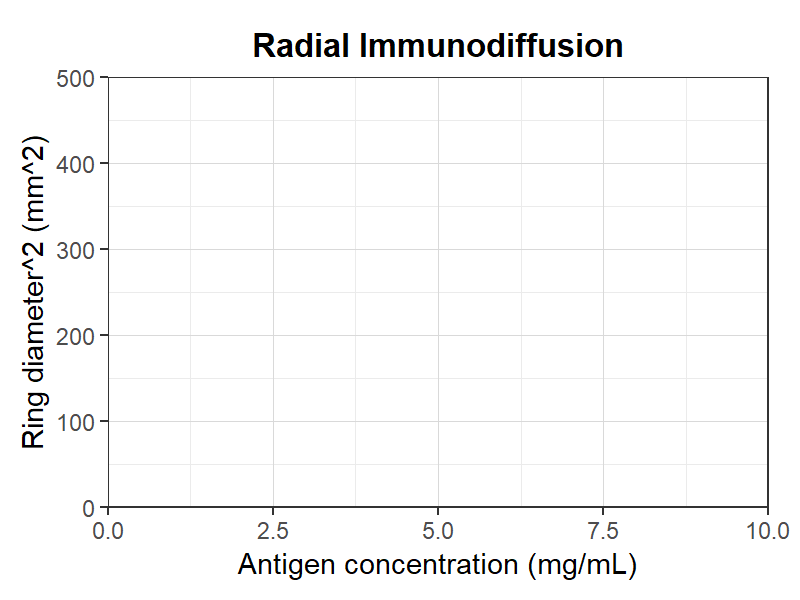
放射免疫拡散
放射免疫拡散法テンプレート。抗原濃度とリング直径の関係をプロット。
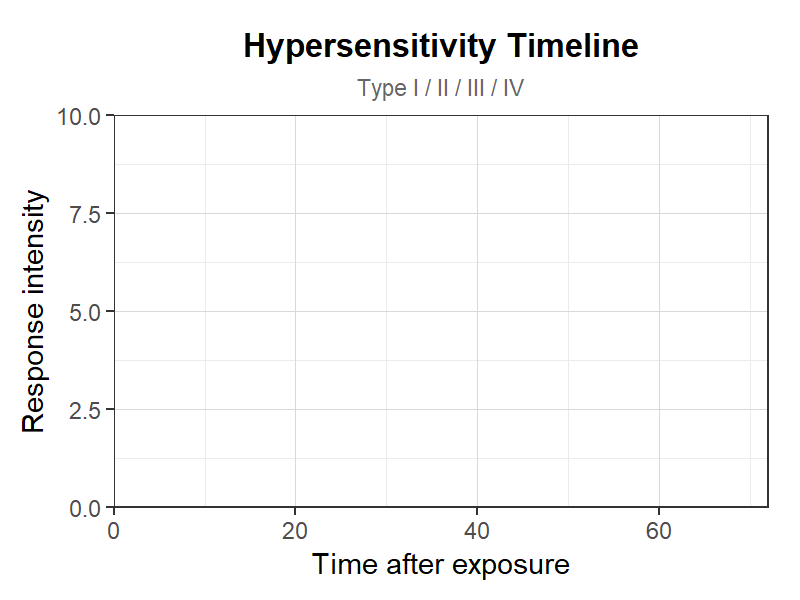
過敏反応タイムライン
過敏反応の時間経過テンプレート。I-IV型の発症時間の違いをプロット。
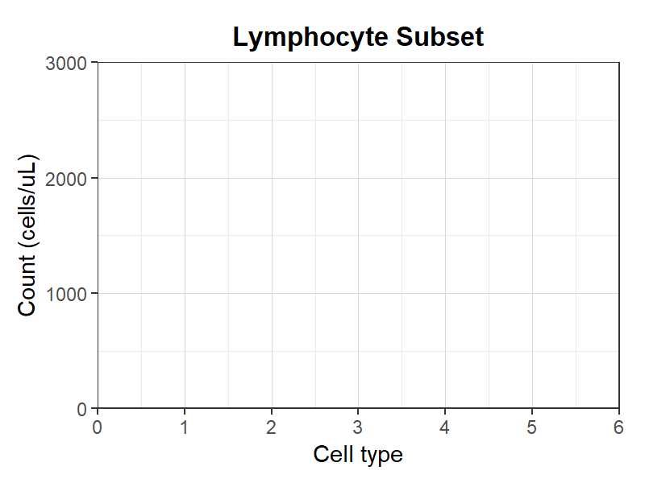
リンパ球サブセット
リンパ球サブセットのカウントテンプレート。CD4/CD8/B/NK細胞数をプロット。